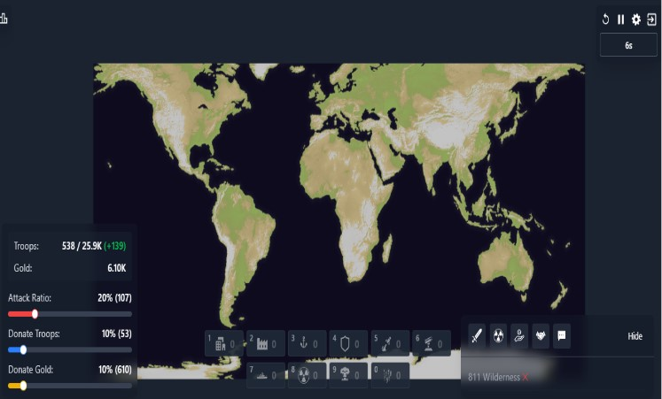
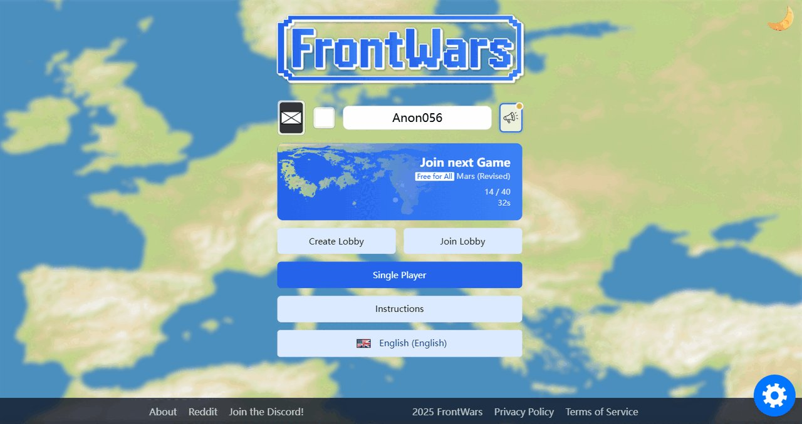

The Hard Truth About Your FrontWars.io Runs
You think you are good at FrontWars.io because you won a few lobby games. You are not. You are just lucky your opponents are equally blind. I have spent over two thousand hours watching players make the exact same fatal errors in the first three minutes. This game is won and lost in the opening decisions, not the late-game scrambles. You click adjacent areas blindly, ignore your terrain, and bleed your troop economy dry. Stop treating the spawn as random. Stop overcommitting your troops. Read this guide and fix your mechanics, or stay stuck in the beginner lobbies forever.

| # | Mistake | Quick Fix |
|---|---|---|
| 1 | The Flatland Sprawl | Square up a compact border early |
| 2 | Bleeding Troops on Mountains | Lower your attack ratio when facing mountains |
| 3 | Wasting the Coast Start | Expand two or three flat tiles inland first to secure your back |
| 4 | Overcommitting to One Border | Never send more than sixty percent of your troops to a single adjacent area u... |
| 5 | Rushing the 72% Push | Build your troop economy first |
The Flatland Sprawl
You spawn in flatland and immediately click every adjacent tile in every single direction. You treat the spawn as random and completely ignore that flatland is the fastest but most exposed terrain in the game. You expand outward blindly, stretching your borders thin across the map instead of securing your core. You think more territory equals more power, but you are just creating a massive, fragile perimeter that your workers cannot possibly support.
Enemies expand toward you just as quickly on flatland. By sprawling in every direction, you severely dilute your frontline troops. Your attack ratio drops significantly on the borders. A single coordinated push from a neighbor easily breaks your uncompact border. You lose your starting territory in the first two minutes because you prioritized useless square footage over a defensible position. Your entire troop economy collapses under the heavy weight of defending a sprawling, incredibly weak perimeter.
Square up a compact border early. Click adjacent areas to form a tight, highly defensible square. Only expand outward once your core is fully fortified and your workers are generating enough gold to sustain the frontline troop economy. A compact border forces enemies to fight through highly concentrated troops. This maximizes your defensive strength and keeps your attack ratio high. Secure your center first, then push out methodically when your gold reserves can easily handle the expansion costs.
Bleeding Troops on Mountains
You spawn near mountains and keep your attack ratio high, trying to push into the rocky tiles immediately. You completely ignore the fundamental rule that mountains cost significantly more troops per tile than flatland. You send a massive percentage of your army into a mountain tile, expecting a quick win. You fail to capture it, drain your reserves, and leave your only easy expansion route completely vulnerable to the next player who spawns nearby.
Your troop reserves drain instantly when you attack high-cost tiles. When you fail to take the mountain, your flatland exit is left completely undefended. A rival swoops in and takes your only cheap expansion route. You are now trapped in a mountain corner with no gold and no troops. You cannot rebuild your economy because your workers have no safe territory to generate resources. You lose the game before the three-minute mark because you refused to respect the terrain costs.
Lower your attack ratio when facing mountains. Claim the nearest flat exit first to secure a cheap, reliable expansion route. Let your workers rebuild your gold reserves before you even think about forcing a fight into the high-cost mountain tiles. When you finally attack the mountains, do it with a massive, overwhelming troop advantage. Never chip away at high-cost terrain. Secure your cheap land, build your economy, and then crush the mountains with superior numbers and gold.

Wasting the Coast Start
You spawn on the coast, see water on one side, and just start expanding inland. You completely forget to save your gold to build a Port before a rival blocks your coastline. You treat the water as a simple barrier instead of a massive economic opportunity. You ignore the naval mechanics entirely, focusing only on basic land tiles. You leave your natural half-defended flank completely unutilized while your neighbors quickly secure the vital water access.
Coastal starts pay off through naval trade, but only if you actually control the water. By ignoring the Port, you waste your natural defensive advantage. A rival takes the coast, blocks your naval expansion, and you lose the late-game economic advantage. You are stuck fighting a land war against multiple enemies while they use the water to flank you. You lose the map control game because you failed to secure the most powerful economic building in the early game.
Expand two or three flat tiles inland first to secure your back. Then, hoard your gold and immediately build a Port. Secure the coastline to unlock naval crossings and trade routes before your neighbors can box you in. The Port gives you a massive economic edge and a safe flank. Use the water to launch surprise attacks on isolated enemies. Control the coast early, and you control the late-game economy. Never spawn on a coast without building a Port.
Overcommitting to One Border
You see an enemy weakening on your north border and you send ninety percent of your troops to attack their adjacent area. You leave your south and east borders completely empty. You think finishing off one weak player is the absolute top priority. You ignore the core rule of balancing aggressive expansion with home defense. You abandon your core territory to chase a single kill, leaving your workers completely exposed to the rest of the lobby.
FrontWars.io is about balancing aggressive expansion with home defense. When you overcommit to one front, your home defense drops to zero. Another player notices your empty borders and clicks your adjacent tiles, wiping out your core territory while you are distracted. You capture a few useless tiles in the north, but lose your entire economic base in the south. Your troop economy dies instantly. You lose the game because you lacked the discipline to maintain a defensive reserve.
Never send more than sixty percent of your troops to a single adjacent area unless you are executing the final push. Keep a steady reserve of troops at home at all times. Balance your attacks so you can defend against sudden flanks while still applying pressure. If an enemy pushes your empty border, you must have the troops to immediately click back and reclaim the tile. Discipline wins games. Protect your core, attack with measured percentages, and never overextend.
Rushing the 72% Push
You hit fifty percent map control and immediately start spamming attacks to reach the 72% push. You ignore your troop economy and worker gold generation in your rush to finish the game. You think hitting the threshold early guarantees a win. You send out massive waves of troops without checking your gold reserves. You prioritize speed over sustainability, draining your army dry just to see the map turn your color a few minutes faster than usual.
The 72% push requires massive troop momentum to succeed. If you push at fifty percent, your attack ratio crashes completely. Your workers cannot generate gold fast enough to replace the troops you are losing on the frontlines. You stall out at sixty-five percent, run out of gold, and get counter-attacked by three desperate neighbors. You lose all your momentum. The push fails because you lacked the economic foundation to sustain the massive troop expenditure required to close out the game.
Build your troop economy first. Maximize your worker gold generation and secure your borders completely. Wait until you have a massive, overflowing troop reserve and the enemy is visibly weakened. Only then do you initiate the 72% push to guarantee map control. You need enough gold to absorb the counter-attacks that will inevitably come. Do not rush the threshold. Let your economy peak, flood the map with an unstoppable wave of troops, and crush the remaining resistance.

The Bottom Line
You want to win at FrontWars.io? Stop clicking blindly and start thinking. The game rewards patience, terrain awareness, and strict economic discipline. Secure your spawn, respect the cost of mountains, build your Port on the coast, and guard your borders. Do not overcommit your troops, and never rush the 72% push without the gold to back it up. Master these mechanics, and you will stop losing in the first three minutes. Fix your mistakes, control your economy, and dominate the map.